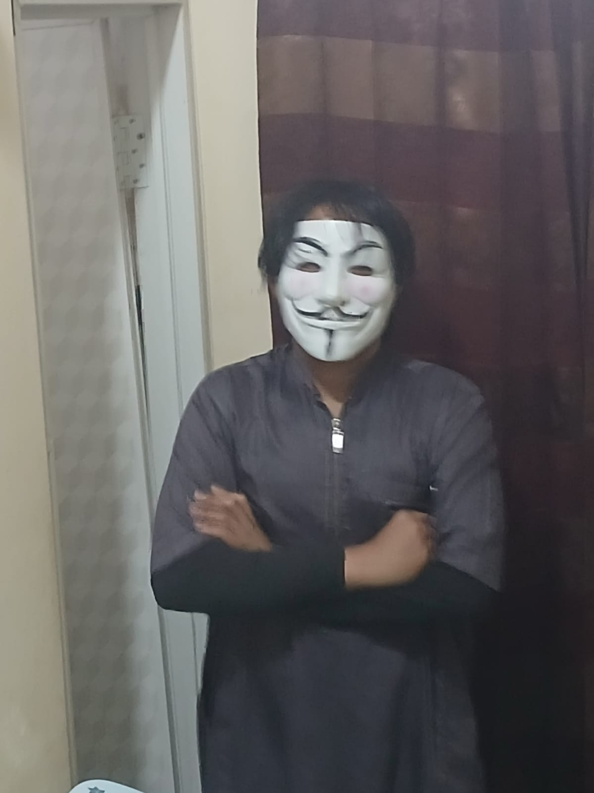
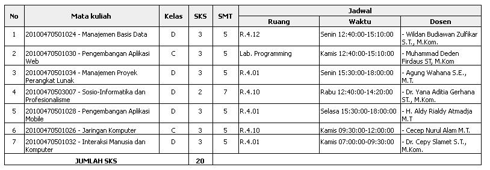

Profil Diri
UIN Sunan Gunung Djati Bandung
Muhammad Zacky Firdaus
Saya biasa dipanggil Zacky, lahir di Bogor pada 14 Mei 2006. Saat ini saya berusia 20 tahun dan sedang menempuh studi S1 Teknik Informatika di UIN Sunan Gunung Djati Bandung. Di perkuliahan maupun proyek mandiri, saya aktif mendalami pengembangan sistem berbasis kecerdasan buatan (AI Engineering), perancangan mekanik serta audio untuk Game Development, dan pembuatan antarmuka web modern sebagai Front-End Developer.
AI Engineering
Eksplorasi pengolahan data, pemodelan pembelajaran mesin, serta integrasi kecerdasan buatan ke dalam aplikasi praktis.
Game Development
Perancangan mekanik permainan, penulisan narasi & worldbuilding, serta rekayasa tata suara interaktif untuk game.
Front-End Development
Pembuatan antarmuka web dan aplikasi yang responsif, terstruktur rapi, serta nyaman digunakan berdasarkan evaluasi UX.
Jadwal Perkuliahan Semester 5
Total: 7 Mata Kuliah (20 SKS)| No | Mata kuliah | Kelas | SKS | SMT | Jadwal | ||
|---|---|---|---|---|---|---|---|
| Ruang | Waktu | Dosen | |||||
| 1 | 20100470501024 - Manajemen Basis Data | D | 3 | 5 | R.4.12 | Senin 12:40:00-15:10:00 | - Wildan Budiawan Zulfikar S.T., M.Kom. |
| 2 | 20100470501030 - Pengembangan Aplikasi Web | C | 3 | 5 | Lab. Programming | Kamis 12:40:00-15:10:00 | - Muhammad Deden Firdaus ST, M.Kom |
| 3 | 20100470501034 - Manajemen Proyek Perangkat Lunak | D | 3 | 5 | R.4.01 | Senin 15:30:00-18:00:00 | - Agung Wahana S.E., M.T. |
| 4 | 20100470503007 - Sosio-Informatika dan Profesionalisme | D | 2 | 7 | R.4.10 | Rabu 12:40:00-14:20:00 | - Dr. Yana Aditia Gerhana ST., M.Kom. |
| 5 | 20100470501028 - Pengembangan Aplikasi Mobile | D | 3 | 5 | R.4.01 | Selasa 15:30:00-18:00:00 | - H. Aldy Rialdy Atmadja M.T |
| 6 | 20100470501026 - Jaringan Komputer | C | 3 | 5 | R.4.10 | Kamis 09:30:00-12:00:00 | - Cecep Nurul Alam M.T. |
| 7 | 20100470501032 - Interaksi Manusia dan Komputer | D | 3 | 5 | R.4.01 | Kamis 07:00:00-09:30:00 | - Dr. Cepy Slamet S.T., M.Kom. |
| JUMLAH SKS | 20 | ||||||
Lihat Lampiran Gambar Screenshot Jadwal Asli
Simpan file screenshot dengan nama jadwal.png di folder proyek ini, atau muat langsung dari tombol di bawah:
